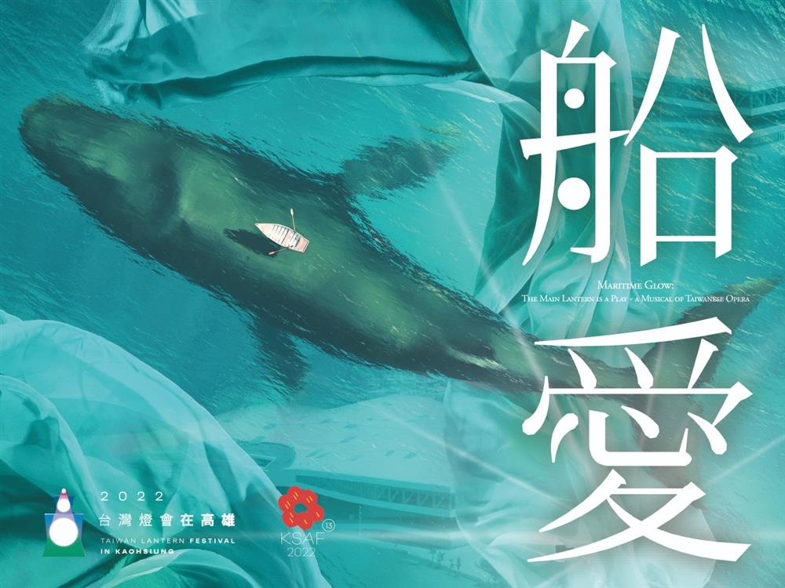
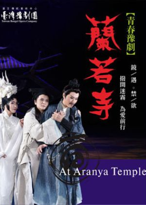
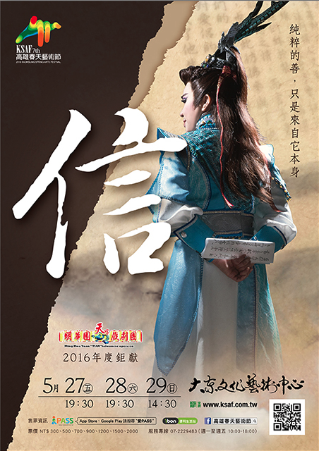
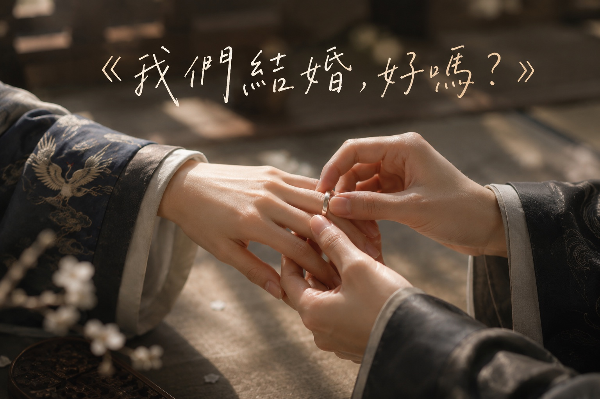
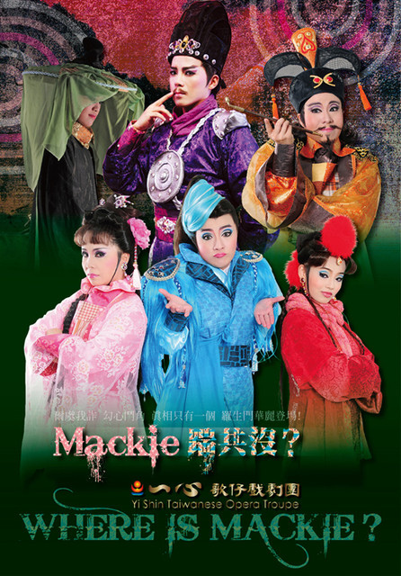

WORKS
作品與系列
作品列表 →作品與系列
代表作品・系列入口
CHICHIAO · FEATURED PRACTICE
跨劇種創作與實踐
奇巧劇團原創作品集中閱讀

SERIES · 2023–2026
臺灣豫劇團武俠宇宙
鏢客・錦衣・行俠

2022 · 虛實光影歌仔音樂劇
船愛
編劇｜臺灣燈會主燈大戲

2015
十八羅漢圖
共同編劇

2016 / 2018
見城
編劇・副導演

2016 · 豫劇
蘭若寺
編劇

2017 · 豫劇
觀・音
編劇

2016
信
編劇・導演｜明華園天字戲劇團

2019
我們結婚，好嗎？
編劇｜紐約酷兒劇作系列

2012 · 歌仔戲
Mackie 踹共沒？
編劇｜台新藝術獎提名